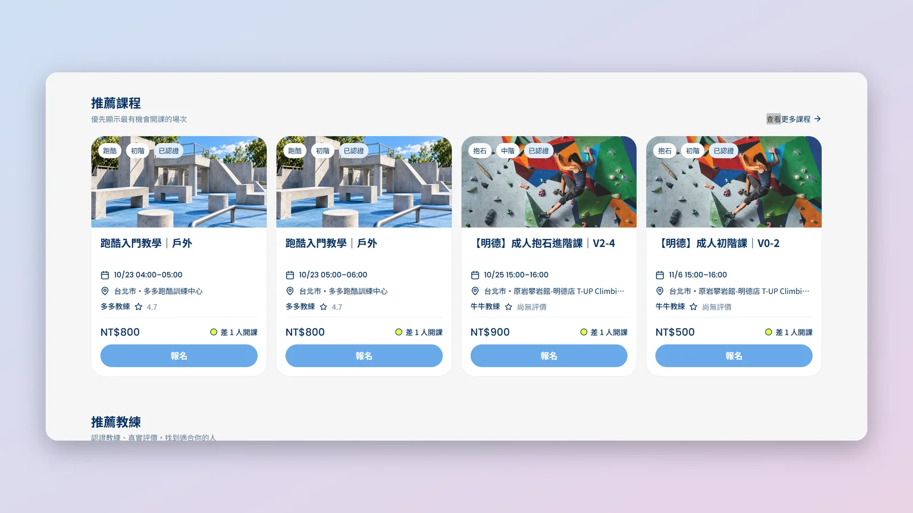
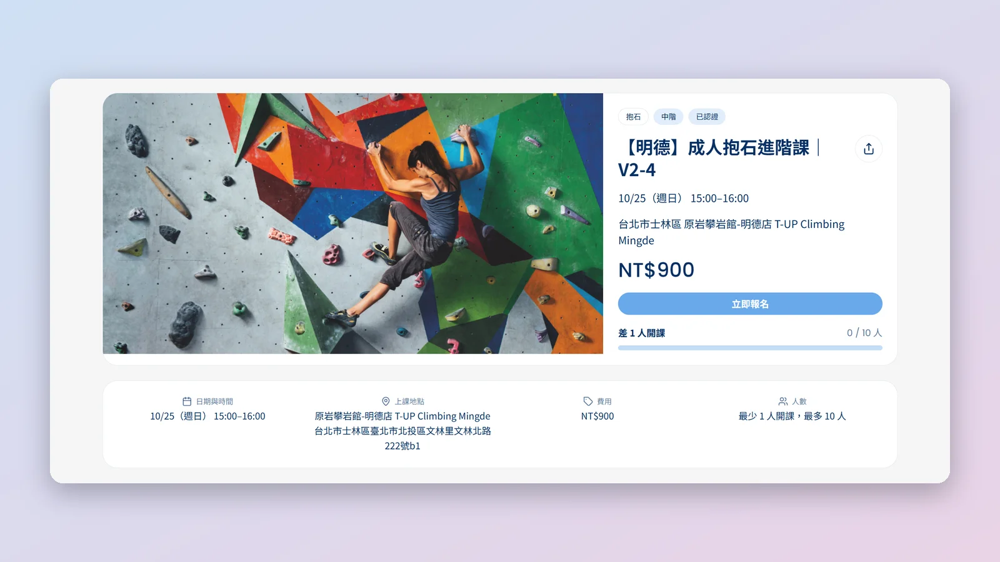
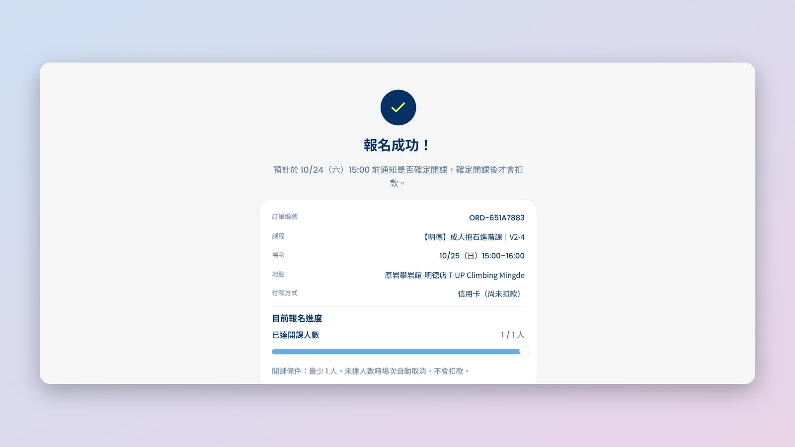
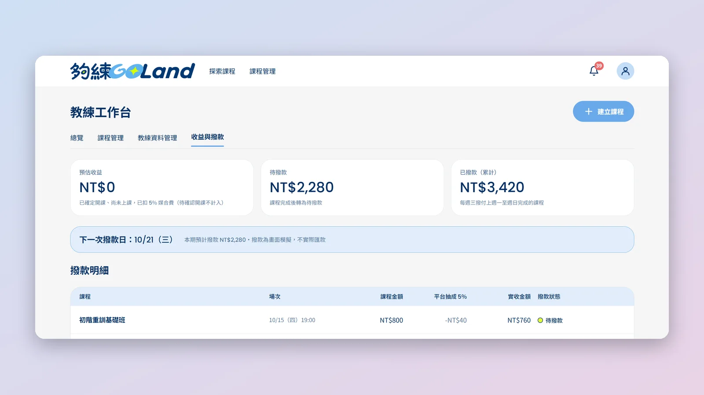
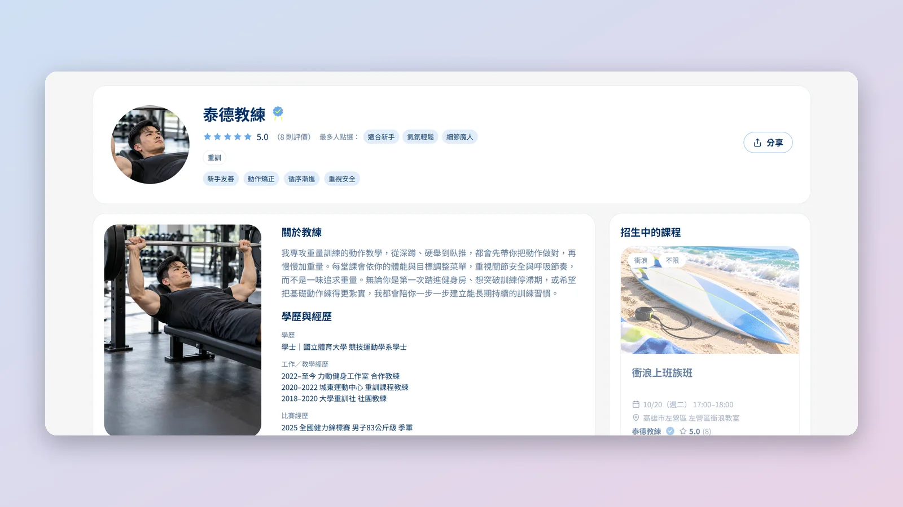
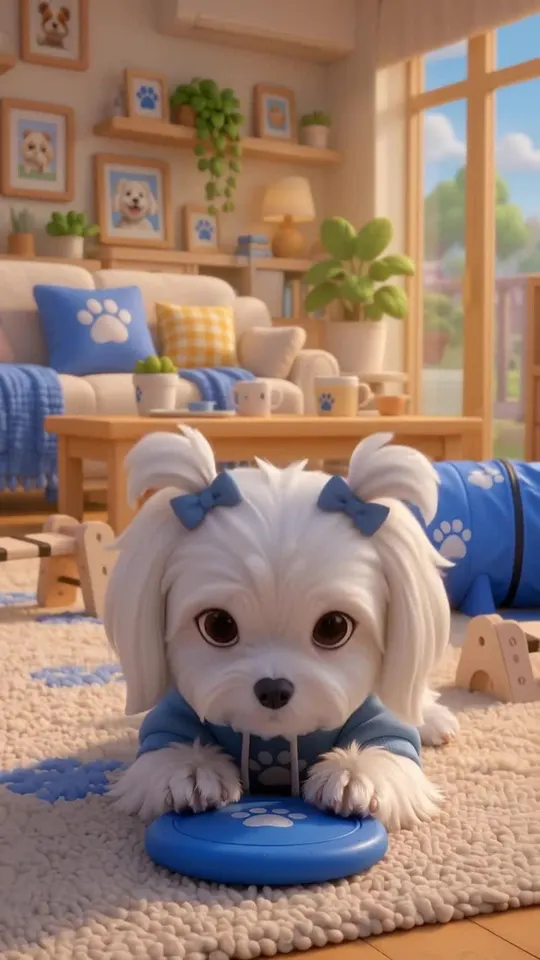

30 秒看懂
原本以為學員卡在「揪不到人」。研究發現，只有 7% 的學員這樣認為。
依 54 份問卷與 24 位訪談，把產品從「幫學員揪團」轉為「教練開課、學員報名」。
5 位受測者找到並報名一堂課的時間；任務達成率 80% → 100%。
我的貢獻
6 人團隊，我是組長／PM。
我主責
使用者問卷
設計問卷主架構，回收 54 份（學員 41、教練 13）。
產品定位與商業模式
決定做「教練開課、學員報名」，並設計抽成路徑。
需求規格 PRD
兩週迭代 18 版（v1.0 → v4.11），並轉成驗收總表。
法規遵循
訂定退款規則，草擬服務條款、隱私權政策、教練合作條款。
我參與
教練端開發
用 Claude Code 做教練申請、認證徽章、課後評價、通知中心等。
UAT 驗收
參與使用者驗收測試。
Demo 影片
錄影、字幕、剪輯與配音。
團隊運作
建 Notion 知識庫、溝通從 LINE 搬到 Discord、設計 AI 進度公告格式（全組採用）。
重點決策與成果
四個轉折：發現、決策、驗證、交付。
真正的阻礙不是揪團
學員問卷 n=41，可複選
另外有 71% 的學員不介意和陌生人一起上課。需求不是「幫忙湊人」，而是「有現成的班可以報」。
從幫學員揪團，轉向教練開課
9/29 MVP Scope Freeze
移除 Google 日曆整合、學員許願媒合、教練懲罰；鎖定後核心功能沒有再變動。
用法律背景訂退款規則
查《體育場館業服務定型化契約》訂取消退費規則，並草擬三份條款。
違約金改成平台與教練拆帳
避免教練覺得平台在從學員失約中獲利。
Demo 前凍結大改
退款規則大改需 1–2 天且有風險，聽取開發組員評估後，決定 Demo 後再做。
找一堂課，從 8.7 分鐘縮到 2.0 分鐘
任務達成率
80% → 100%找課耗時
8.7 → 2.0 分鐘Google → 官網 → 填寫表單 → 等待回覆
Facebook → 社團貼文 → 電話聯繫
搜尋／篩選 → 課程詳情 → 報名
5 位受測者（任務測試 4 位、回饋表單 1 位），樣本小，屬初步驗證；付費意願與冷啟動等仍待市場驗證。
AI 寫得快，所以把關更嚴
開發用 Claude Code。main 分支只有一個人能寫入，其他人一律透過 PR 與 Preview 驗證：
產品畫面
學員與教練兩端，都有完整流程





想看更多
完整文件與影片
想看原始資料，這裡都有。
Demo 與行銷影片

反思
如果重來一次
- PRD 改成以「頁面與流程」撰寫，並做成可互動的版本前期 PRD 以功能為單位寫，首頁、法律條款頁到開發後期才補上。下次會先列出頁面清單，讓學員、教練、訪客三種角色各走一遍流程。
- 自己負責的功能需求更早寫進 PRD第一次當 PM，需求是邊做邊補，導致 PRD 後期一直更新。下次會在 Scope Freeze 前把需求寫完，未定的規則標「待定」並訂下決策期限。
- 第一天就建好 Discord從 LINE 換到 Discord 後，溝通效率明顯變好。下次專案一開始就建好分頻道的協作空間。